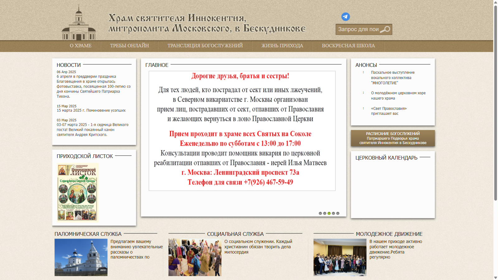
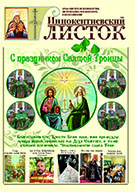

Ближайшая служба
14 июля
08:00 · Литургия
Неделя 5-я по Пятидесятнице
Полное расписание →Современный сайт прихода, где расписание, новости, воскресная школа, фотогалерея и двадцатилетний архив легко находить на любом устройстве.
Неделя 5-я по Пятидесятнице
Полное расписание →Цвета опираются на зелень церковных кровель, тёплый камень и латунь. Антиква отвечает за достоинство, гротеск — за ясность интерфейса.
Спокойная антиква с выразительной кириллицей.
Чёткое чтение длинных названий и дат на небольшом экране.
Каждый блок создаётся из структурированных данных CMS и одинаково уверенно работает на ПК, планшете и смартфоне.

Ведущий материал получает понятную дату, рубрику, изображение и краткое описание.
